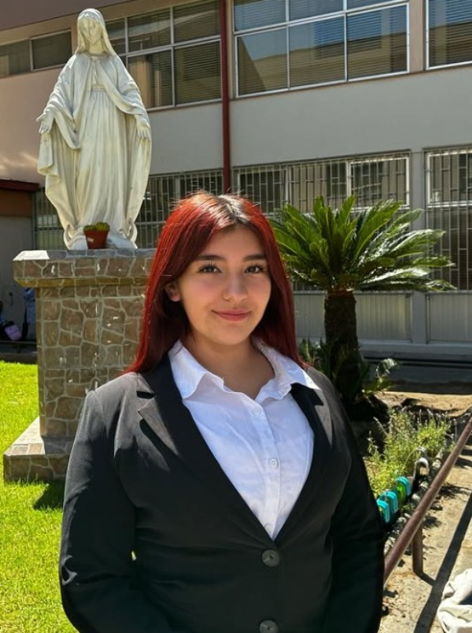
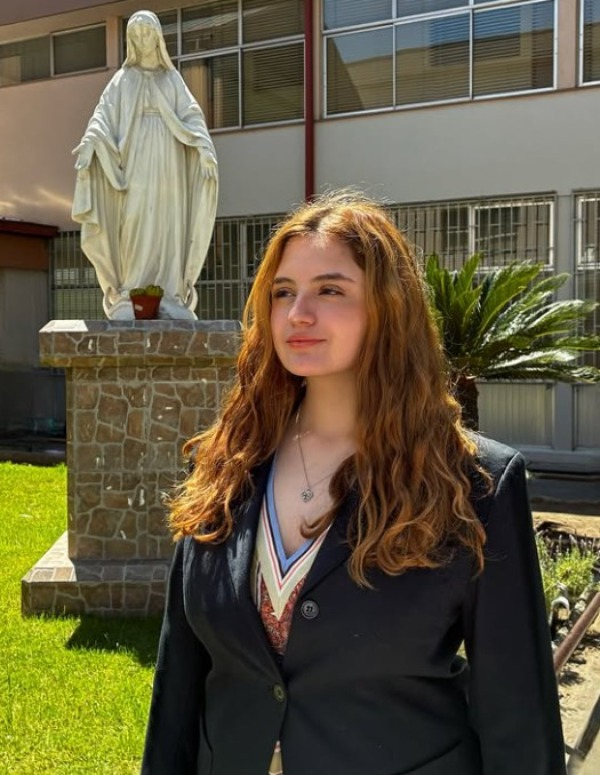

Fundamos Orden Nacional con el propósito de promover y fortalecer los derechos de nuestros compatriotas en ámbitos esenciales como la salud y la educación. Asimismo, buscamos resguardar el orden público, garantizar la seguridad y reactivar la economía para construir un país más justo y fuerte
Nuestros principios
Orden Nacional se rige por la igualdad de derechos desde la concepción hasta la muerte. Defendemos la preservación de la identidad nacional y amor a la patria. Además de esto, apoyamos el fortalecimiento de las instituciones encargadas de proteger nuestras fronteras, economía e independencia.

Presidenta de la República
Isabel Valenzuela
Líder visionaria y comprometida con su equipo. Isabel destaca por su capacidad para inspirar, escuchar y transformar ideas en acción. Bajo su dirección, el gabinete trabaja con unidad, responsabilidad y entusiasmo para alcanzar cada meta.

Ministra del Interior
Eloísa Trejo
Eloísa trabaja para que el orden y la seguridad sean derechos que se cumplan para todos. Su enfoque está en proteger a las personas, garantizar el respeto a la ley y coordinar acciones efectivas para mantener la paz y la convivencia en el país.
Ministra de Hacienda
Sofía Salinas
Sofía es responsable y organizada. Se encarga de cuidar los recursos del gabinete y usarlos de la mejor forma posible. Además, propone ideas para mejorar la economía y lograr un uso más justo del dinero en Chile.
Vocera de Gobierno
Valentina González
Valentina es la encargada de comunicar las ideas y proyectos del gabinete. Habla con claridad y seguridad, representando al equipo con respeto y entusiasmo.
Ministra de Salud
Lux González
Lux se preocupa por el bienestar de todas las personas. Además de promover hábitos saludables, tiene propuestas para mejorar el sistema de salud y ayudar a que la atención médica en Chile sea más justa.
Ministra de Educación
Emilia Guerra
Emilia es una persona dedicada y creativa. Trabaja para que la educación sea un derecho que realmente se cumpla y que se respete: los profesores deben ser valorados y las estudiantes deben aprender con disciplina. Tiene propuestas claras para fortalecer el sistema educativo y garantizar calidad en las aulas.